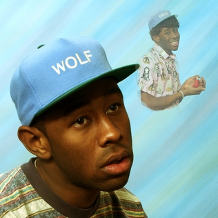
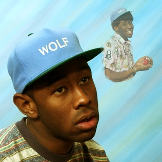
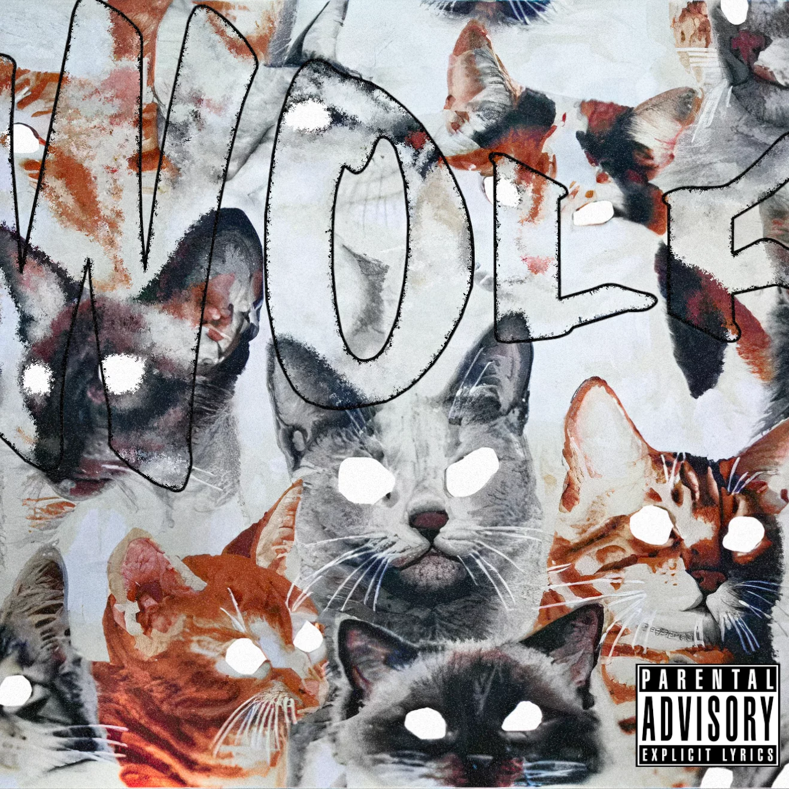
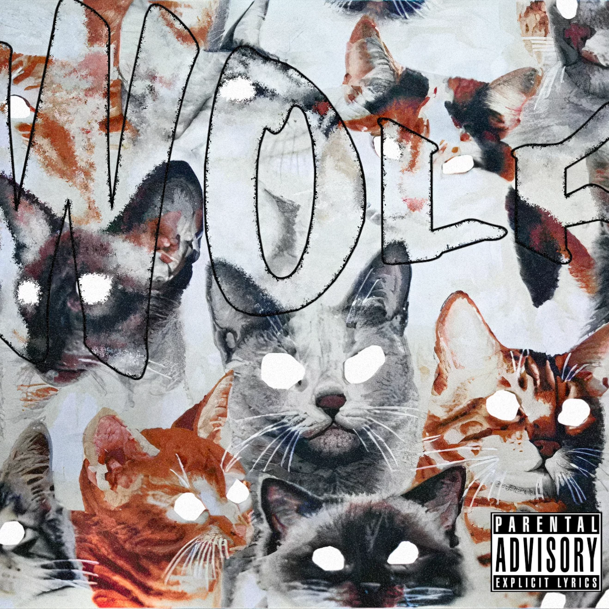

The album follows a narrative of a love triangle where Tyler is in love with a man who is also dating a woman who is pulling him away from Tyler. American comedian Jerrod Carmichael serves as the album's narrator as it progresses, speaking short lines to make sense of Tyler's and the title character Igor's state of mind.
Running out of time is the 4th track on the album IGOR which tells the story of a man trying to get with a friend of his whom is already in a relationship but there are mutiple obstacles one of them being how much time IGOR has to try and keep his friend. Yet IGOR can never get his friend and the girl to break up in time so IGOR is forced out but makes sure to remain friends with the man making the album a cycle doomed to repeat over and over until IGOR or the man can finally let go and move on with their lives.
The character Igor is mentioned by name on the tracks "Igor's Theme" and "What's Good". Igor follows the Gothic "Igor" archetype as a villain's assistant and represents a darker, apathetic side of Tyler that is revealed. Igor arrives after Tyler pours out all of his heart for his love interest, though his love interest remains focused on his ex-girlfriend. The arrival of Igor serves as a reset for the strong romantic emotions Tyler was entangled in during the album's first half.
The impact of fan fixation plays no small part on CHROMAKOPIA, his seventh studio album and first in more than three years. Reacting to the weirdness, opening track "St. Chroma" finds Tyler literally whispering the details of his upbringing, while lead single "Noid" more directly rages against outsiders who overstep both online and offline. As on his prior efforts, character work plays its part, particularly on "I Killed You" and the two-hander "Hey Jane." Yet the veil between truth and fiction feels thinner than ever on family-oriented cuts like "Like Him" and "Tomorrow."
The song is a ballad about Tyler's unknown father, whom he calls a "ghost". At the end of the song, Tyler's mother assures that his father's absence was her fault, not his.
Its title essentially distillable to "an abundance of color," CHROMAKOPIA showcases several variants of Tyler's artistry. Generally disinclined to cede the producer's chair to anyone else, he and longtime studio cohort Vic Wainstein execute a musical vision that encompasses sounds as wide-ranging as jazz fusion and Zamrock. His influences worn on stylishly cuffed sleeves, Neptunes echoes ring loudly on the introspective "Darling, I" while retro R&B vibes swaddle the soapbox on "Take Your Mask Off.""
"Answer" is a song by Tyler, The Creator that was released as the sixth track from his third studio album, Wolf (2013). Similar to "Inglorious" from Bastard, "Answer" is a gloomy song about Tyler's non-existent relationship with his father and features additional vocals from Syd.
Wolf is a concept album that features a continuous story of characters Wolf, Sam and Salem. Therapist character Dr. TC makes his last appearance on a Tyler album on the final track "Lone". The story presented in Wolf has been said to link to Tyler's two previous projects, with debates occurring on whether Wolf comes chronologically before or after Goblin.
Tyler's two prior projects, Bastard and Goblin, contained lyrics and themes commonly used in the horrorcore subgenre, which Tyler claimed to not be part of. In November 2011, in an interview with Spin, Tyler expressed wanting to shift away from the themes of his previous work,
Wolf was supported by its lead single, "Domo23". The album received generally positive reviews from critics and debuted at number three on the US Billboard 200, selling 89,000 copies in its first week. 2 prior projects that centered around Wolf that were never finsished were a movie version of Wolf and the lost songs and files of Wolf 2010.

 
  
